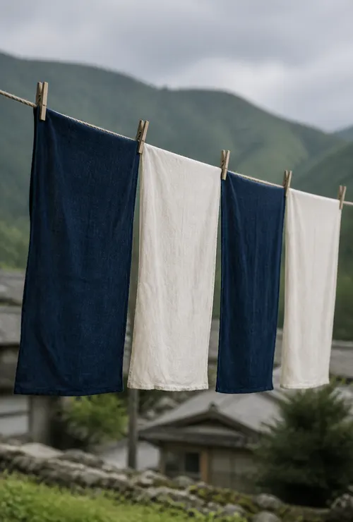
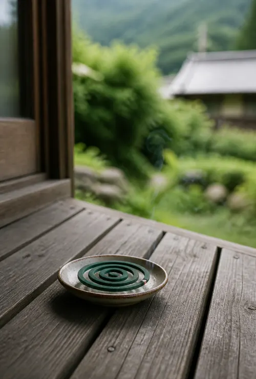

集落
戸数二十ほど。
谷の奥の、小さな集落です。
蕗原は、蕗原川に沿って家が点々と並ぶ集落です。川の両側に棚田がひらけ、そのあいだを細い水路が通っています。春先には、その名のとおり土手いっぱいに蕗が出ます。
暮らしているのは、田んぼと畑を続けている家がほとんど。熾の薪の多くは、集落の山の手入れで出た木を分けてもらったものです。サウナ小屋の板を張ってくれたのも、二軒となりの大工さんでした。
お越しの際は、集落の道をゆっくり走っていただけると助かります。軽トラックや、散歩中のおばあちゃんとすれ違うことがよくあります。
朝市

月に一度、土間が市場になる日。
毎月第三日曜の朝、熾の土間と庭で小さな朝市をひらいています。集落の人たちが、畑の野菜や手しごとの品を持ち寄って並べます。
買いものついでに、縁側で話しこんでいく人も少なくありません。サウナに来たことのない近所の人と、遠くから来たお客さまが、囲炉裏のまわりで同じ話題で笑っている。熾をはじめたとき思い描いていたのは、そういう朝でした。
| 日にち | 毎月第三日曜（1月・2月はお休み） |
|---|---|
| 時間 | 8:00〜11:00 |
| 場所 | 熾の土間と庭 |
| 入場 | 無料・予約はいりません |
- 朝市の日も、サウナの枠はいつもどおりご予約いただけます。
- 駐車場がこみあうので、乗り合わせでお越しください。
蕗原の一年

SPRING
春
田に水が入ると、棚田が一枚ずつ空を映します。朝の霧がいちばん濃いのもこの季節です。
SUMMER
夏
瀬の水がぬるくなり、子どもたちの声が谷に響きます。日が長いので、三の枠がいちばん人気です。
AUTUMN
秋
稲刈りが終わると、川の水が一気に冷たくなります。外気浴の椅子に、ポンチョが欠かせなくなるころです。

WINTER
冬
集落は雪に包まれ、薪ストーブの出番です。瀬に入る人は減りますが、雪の上に寝転ぶ人は増えます。